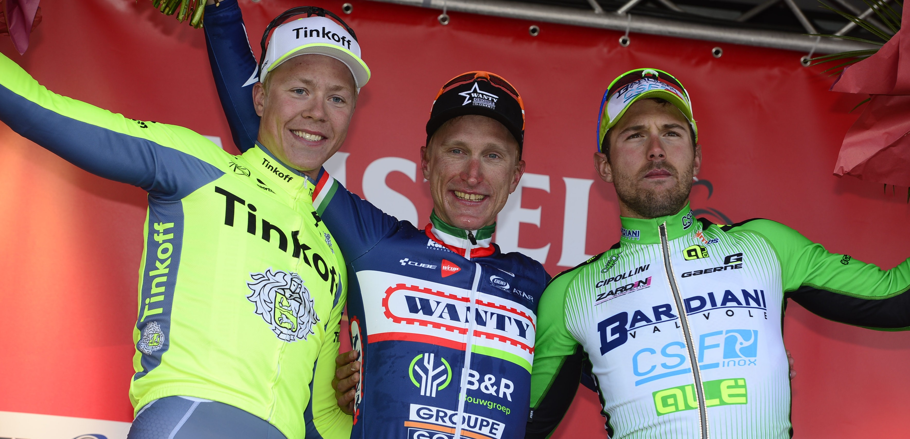
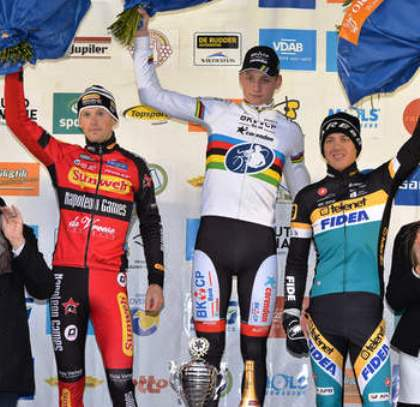

Op deze pagina vindt u informatie over de wedstrijden die u kunt volgen dicht bij renners. Klik op uw keuze om te bestellen
De Omloop Het Nieuwsblad is een eendaagse Vlaamse wielerwedstrijd die in het algemeen het wielerseizoen in België en Noord-Europa opent. Om die reden heeft deze wedstrijd een vrij grote status.
De 72e Omloop Het Nieuwsblad op zaterdag 25 februari is op voorhand al een editie voor de geschiedenisboeken. Vanaf 2017 staat de Omloop namelijk voor het eerst op de befaamde WorldTour-kalender en zakken dus heel wat topploegen met hun beste renners af naar Gent. Vorig jaar werden de start en de aankomst van Omloop Het Nieuwsblad door de Halfvastenfoor op het Sint-Pietersplein verlegd naar de site aan het SMAK en het Citadelpark. Wegens het grote succes vorig seizoen, de positieve reacties bij renners, sponsors en fans en de razend spannende finale met een fantastische eindwinnaar werd besloten om ook de editie in 2017 te laten plaatsvinden op deze site. Het startschot zal dus gegeven worden voor het SMAK (naast 't Kuipke), de aankomst ligt net als vorig jaar op de licht hellende Emile Clauslaan ter hoogte van de Plantentuin aan de Ledeganckstraat. Aan het parcours zelf is weinig veranderd in vergelijking met de prachteditie van 2016. De renners krijgen op zaterdag 25 februari 13 hellingen en 10 kasseistroken voorgeschoteld. De enige wijziging is dat de Molenberg terug is als 13e en laatste helling van de dag op 35 kilometer van de finish. Vorig jaar werd de Molenberg nog uit het parcours gelaten door wegenwerken en werd gekozen voor de Boembekeberg als vervanger. In 2017 is het dus opnieuw de beurt aan deze bekende helling in Sint-Denijs-Boekel om te dienen als mogelijke scherprechter. De renners zullen in totaal drie keer over de kasseien van de Haaghoek dokkeren. Daartussen komen ook de Donderij, de Ruiterstraat, de Karel Martelstraat en de Holleweg voor in het stuk. Na de beklimming van de Molenberg als laatste hellingen moeten de renners in de laatste rechte lijn naar de finish nog over de Paddestraat, de Lippenhovestraat en de Lange Munte. Tussen de twee passages van de Haaghoek (na 51km en na 107km) dendert het peloton over de Leberg, de Berendries, Tenbosse, de Eikenmolen, de Muur van Geraardsbergen/Kapelmuur en de Valkenberg. Nadien volgen nog de Kaperij, de Kruisberg, de Taaienberg, de Eikenberg, de Wolvenberg, nogmaals de Leberg en op 35km van de eindmeet de Molenberg.
Op zondag 26 februari 2017 wordt de 69e editie van de Vlaamse voorjaarsklassieker Kuurne-Brussel-Kuurne verreden. De koers staat altijd ingeroosterd op de negende zondag van het jaar, daags na de Omloop Het Nieuwsblad. Gezamenlijk vormen de twee races zo het Vlaamse Openingsweekend. ‘KBK’ is een koers voor sprinters, getuige ook het podium van 2016: Mark Cavendish, Alexander Kristoff en Elia Viviani.
Editie 2017 belooft weer een spetterende editie te worden. Zo wordt er in 2017 op de top van Nokereberg rechtdoor gereden richting de Holstraat. Via smalle golvende wegen rijdt het peloton naar het kasteel van Herlegem waar een extra kasseistrook van 800 meter ligt. De renners nemen dan een bocht van negentig graden en rijden in Kruishoutem over de brug die over de E17 loopt. Kortom terwijl vorige jaren Nokereberg de laatste hindernis was vooraleer op brede wegen naar de finish werd gereden, is er nu tussen kilometer acht en vijf nog een geaccidenteerd parcours te vinden. De laatste vijf kilometer zijn wel nog op brede wegen. Aan de rest van het parcours is niets noemenswaardig veranderd. Vanaf volgend jaar behoort Dwars door Vlaanderen tot het WorldTour-circuit. Hoewel er geen startplicht is voor WorldTour-ploegen in de nieuwe koersen die tot de WorldTour behoren zijn er op vandaag al vijftien teams die hebben toegezegd. Nooit eerder was dat het geval.
E3 Harelbeke wordt traditioneel voorafgaand aan de Ronde van Vlaanderen verreden en is voor vele grote renners een generale repetitie. Net als in 'Vlaanderen Mooiste' is het parcours gepeperd met diverse heuvels en kasseistroken. Kan Sagan wraak nemen in de editie 2017 of moet hij het onderspit delven op zijn concurrenten?
Gent-Wevelgem In Flanders Fields trekt op zondag 26 maart 2017 opnieuw langsheen de Vlaamse Velden die ooit het decor waren van de Grote Oorlog. De wedstrijd maakt met haar parcours een eerbetoon aan de 600.000 slachtoffers die in de Westhoek vielen. Ter herdenking van de Kerstbestanden van 1914 wordt er een ommetje gemaakt door de Plugstreets in en rond Ploegsteert.
Editie 2017 belooft een speciale editie te worden voor ons en de renners. Met het afscheid van Fabian Cancellara is er 1 grote kanshebber op de overwinning minder. Het parcour is grondig gewijzigd. Als u alles eens rustig wilt bekijken. Klik dan hier
De 105de editie van de Scheldeprijs start op woensdag 5 april 2017 in Mol. De organisatoren van Vlaanderens oudste klassieker verhuizen de start van hun wedstrijd eenmalig naar de Kempen als eerbetoon aan Tom Boonen. De voormalige wereldkampioen start in zijn allerlaatste koers op Belgische bodem dus in zijn eigen dorp. De renners tekenen het startblad op het Rondplein in Mol. Nadien wordt via Balen een ronde door de Kempen gemaakt. Na pakweg 50 kilometer komt het peloton nog een keertje door de woonplaats van Tom Boonen. “In de buurt van Tielen, na ongeveer 108 kilometer, wordt weer aangesloten op het traditionele parcours van de Scheldeprijs”, meldt Jef Peeters namens de lokale organisatie.
Op 16 april 2017 zal de 52e editie van de Amstel Gold Race 2016 plaatsvinden. De race begint om 10:15 op het Marktplein in Maastricht en finisht rond 16:30 in Valkenburg, waar de opvolger van Enrico Gasaparotto. gekroond zal worden. De renners dienen in de Amstel Gold Race 258 kilometer af te leggen. Tijdens de koers staan er 34 beklimmingen op het programma. In totaal zal het peloton 4.000 hoogtemeters moeten overwinnen. In de slotfase van de wedstrijd zullen de deelnemers aan deze UCI WorldTour-wedstrijd de Cauberg een keer extra moeten beklimmen. Na de laatste doorkomst aan de finish worden de renners richting Geulhemmerberg (970 meter, stijgingspercentage 7.9%) gedirigeerd. Aansluitend zetten ze koers richting Maastricht. Via de Bemelerberg (900 meter, stijgingspercentage 7%) en Sibbe keren de renners terug in Valkenburg waar het peloton opnieuw de Cauberg voor de kiezen krijgt. Het altijd massaal aanwezige publiek op de Cauberg krijgt op deze manier de Amstel Gold Race op de meest beroemde Nederlandse berg vier keer te zien.

De 103e editie van Luik-Bastenaken-Luik word verreden op zondag 23 april. ‘La Doyenne’ is de laatste van de grote voorjaarsklassiekers. De race gaat heen en weer tussen Luik en Bastenaken en vooral het tweede deel wordt gekenmerkt door steile beklimmingen in de Ardennen. Daarmee is de koers op het lijf geschreven van klimmers en puncheurs. Wout Poels is titelhouder. De Nederlander won de koude en regenachtige editie van 2016 in de sprint van een kleine kopgroep. Daarmee volgde hij Adrie van der Poel op als laatste Nederlandse winnaar van Luik-Bastenaken-Luik. De vader van Mathieu won de race in 1988. Albasini en Costa completeerden in 2016 het podium. Dylan Theuns was de beste Belg op de zeventiende plaats.
De 115e editie van Parijs-Roubaix wordt op zondag 9 april 2017 verreden. Of het nu regent of droog is, met de ruim 50 kilometer aan kasseien in het parcours is de race altijd een aanslag op het gestel van de renners. Wordt het glibberen en glijden op de middeleeuwse keien, of juist stof happen? Spektakel is hoe dan ook verzekerd. De vorige ‘Hel van het Noorden’ werd een prooi voor Mathew Hayman. De Australiër bleef op het Velodrome van Roubaix Tom Boonen, Ian Stannard en Sep Vanmarcke in de sprint voor. In 2017 rijdt Tom Boonen zijn laatste Parijs-Roubaix. De recordhouder (vier zeges) neemt die dag afscheid van het peloton. Met een overwinning?
De Druivencross is een jaarlijkse wedstrijd in het veldrijden die gehouden wordt in het Belgische Overijse. De wedstrijd maakt geen deel meer uit van een klassement, al draagt de klassieker wel de bijnaam "de moeder van alle crossen". Sinds een aantal jaar geldt in deze cross dat wie in vijf jaar tijd drie maal de Druivencross wint een extra prijs krijgt, namelijk een cheque ter waarde van 12.500 euro. Wie is de opvolger van Mathieu Van der Poel
